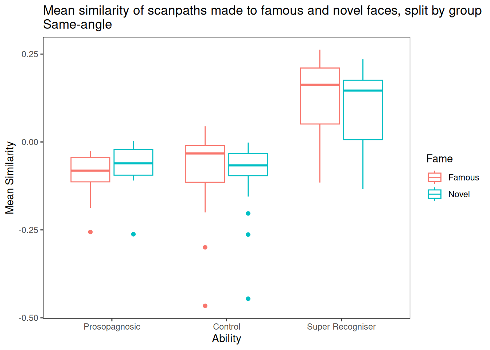
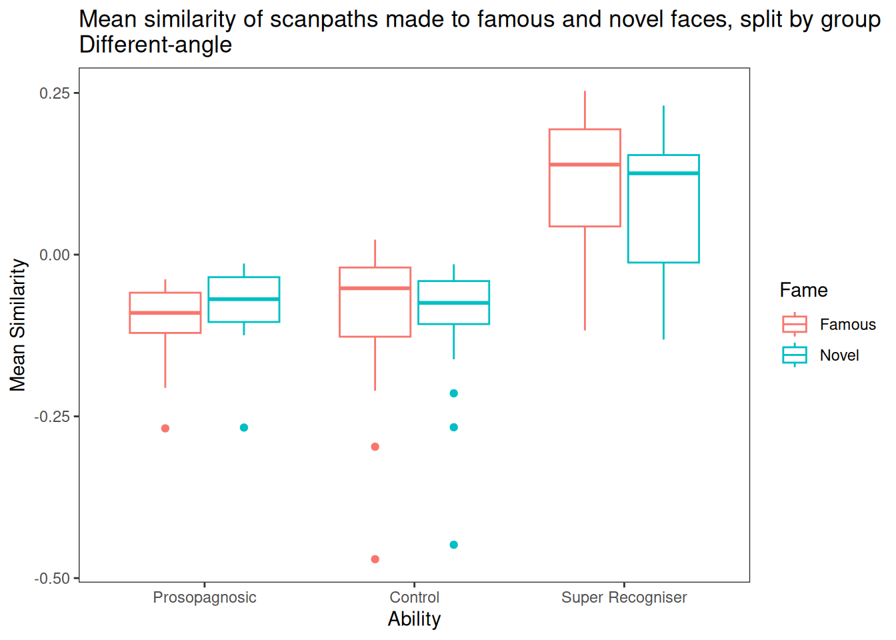
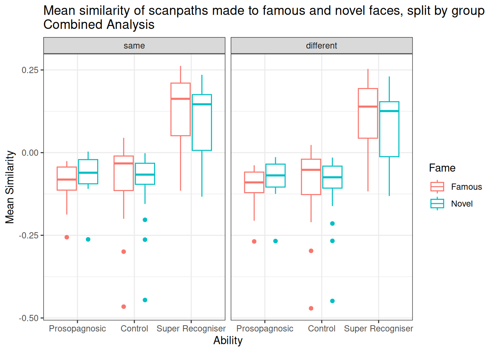

| Fame | Prosopagnosic | Control | Super Recogniser |
|---|---|---|---|
| Famous | -0.093 | -0.066 | 0.124 |
| Novel | -0.068 | -0.081 | 0.098 |
bate-scan
Data pre-processing
The raw data are at this OneDrive link. This is a very large file circa 5GB with nearly 60 million rows so it is not distributed with the code. However the binned sequences are supplied with the code, as binned_samples.rds and the analyses run using that file as input.
Filter the data to allow only correct responses, replacing scan paths for inaccurate trials with NA so the structure of the design is preserved and we don’t end up trying to merge sparse matrices.
Filter the data to allow only samples that occurred before the key-press where they respond.
Recode the following participant labels: C17, C26, C35, C38, C44, C62 and C70 were coded as Controls and should be Develelopmental Prosopagnosics. C13 and C68 are currently coded as Controls and should be Super Recognisers.
Famous faces have codes like H10A, L10A. This is actually one identity, identity number 10. It’s two different angles of the same identity, but they are both coded A. So we need to do some careful renaming of the stimulus to yield consistent first character coding for famous; retain 2nd and 3rd characters for identity within famous; recode 4th character so that individual identities have A,B,C,D not A,A,B,B
There were 40 Controls, 15 Developmental Prosoganosics (DP) and 15 Super Recognisers (SR). Each participant saw the same 20 Famous faces and 20 novel faces four times each, once in each of four different angles.
Background
The leading theory of face learning proposes that an understanding of the unique source of variation is required for each individual face that we know (the within-person variability hypothesis - Burton). Further, different perceivers may rely on different sources of variation. This hypothesis receives support from findings in the eye-movement literature, where an eye-movement based memory effect is characterised by more unique scanpaths for familiar compared to novel faces (given a general schema is elicited for novel faces where there is no stored representation to guide scanning towards the most informative region).
If these theories are correct, we would predict that the same perceiver’s scanpaths would be similar for different images of the same familiar identity, but these would differ from (a) scanpaths that the same individual elicits to familiar faces of different identities, and (b) scanpaths that other individuals elicit to the same familiar images.
Further, scanpaths that a particular perceiver elicits to different images of the same unknown (novel) person would also be similar, but these would also resemble scanpaths that (a) the same perceiver elicits to novel faces of other identities, and (b) different perceiver elicit to the same identities.
An extension of this hypothesis is that the unique sources of identity information may become less varied as face recognition ability increases. That is, it is possible that individuals who excel at face recognition may do so because they are particularly adept at locating the most informative region of the face for a particular identity.
From this perspective, it is possible that different super-recognisers elicit similar scanpaths to familiar faces of the same identity, and these are more unique in control participants and even more so in those with developmental prosopagnosia.
Other very recent research suggests an alternative hypothesis, arguing against the within-person variability hypothesis by finding that super-recognisers are just as good at recognising unfamiliar faces as typical perceivers who have high familiarity with the same individuals (Yovel & Bate, 2023). This suggests that exposure to unique sources of variability may not underpin familiar face recognition at all. Instead, it is possible that better recognisers use similar sources of facial information for all familiar faces (all even all faces per se), but this has been obscured in eye-movement studies to date as they have not considered individual differences in face recognition ability as a predictive factor.
Data Analysis
For analysis 1 and 2, see the relevant folders in the previous repository at https://github.com/mjgreen/sarah.
Analysis 1: Replication of the EMBME
EMBME: eye-movement based memory effect
An initial analysis will seek to replicate the existing EMBME, where it has been shown that scanpaths elicited to famous faces are less similar than those elicited to unknown (novel/distractor) faces. To do this we would need to, per participant:
Compare scanpaths of each famous image to all other famous images of different identities (but not to the other three of the same identity)
Compare scanpaths of each novel (distractor) image to all other novel images of different identities (but not to the other three of the same identity).
For each participant, this will require 76 pairwise comparisons for each of the 80 images in the famous and novel conditions. An average of the resulting 6080 comparisons in each condition should be calculated, so there is one average score per participant in the famous and novel conditions.
Analysis 2: Within-individual scanpath similarity
Is scanning of the same familiar identity more similar?
Each participant’s scanpath for a given stimulus identity in a given angle is compared to the same participant’s scanpaths for the same stimulus identity in each of the other three angles. This makes 6 comparisons of a given participant’s scanpaths for each stimulus identity: AB, AC, AD, BC, BD, CD. The 6 comparisons for each participant’s scanpaths of each stimulus identity are then averaged. Then the comparisons for famous stimulus identities and novel stimulus identities are averaged separately. The similarity here refers to how alike the scanpaths of a given participant were across various different angles of the same stimulus identity.
Analysis 3. Within-group scanpath similarity
Are the similarities across the same identity common across perceivers of the same group, or idiosyncratic even among higher ability participants?
Part A, same-angle comparisons
Each participant’s scanpath for a given stimulus identity in a given angle is compared to all the other participants in the same group seeing the same stimulus identity in the same angle.
For Controls this is \((45-1)=44\) comparisons for each angle of each stimulus identity. For DPs this is \((15-1)=14\) comparisons for each angle of each stimulus identity. For SRs this is \((15-1)=14\) comparisons for each angle of each stimulus identity.
This is 12,000 rows. 75 subs x 40 stimulus identities x 4 angles. 45 columns for control; 15 for devprop and super: one column for each comparison.
The 44 (For Control group) comparisons for each participant’s scanpaths of each stimulus identity in a given angle are then averaged, to give the mean similarity of everyone else’s similarity for that stimulus identity in that angle.
This is 12,000 rows. 75 subs x 40 stimulus identities x 4 angles. 1 column representing the mean of all the comparisons (44 comparisons for control, 14 for devprop; 14 for super)
Then the comparisons for famous stimulus identities and novel stimulus identities are averaged separately, collapsing over different angles of the stimulus identity and different stimulus identities at the same time.
This is 150 rows, 75 participants in each of famous and novel, and one column for mean similarity.
A version in wide-form is at analysis_3/analysis3a/analysis3a_wide.csv
The similarity here refers to how alike the scanpaths are among different members of the same participant group when seeing the exact same picture (same angle of the same stimulus identity).

| Effect | DFn | DFd | F | p | |
|---|---|---|---|---|---|
| Ability | 2 | 72 | 28.24 | <0.001 | *** |
| Fame | 1 | 72 | 5.31 | 0.024 | * |
| Ability:Fame | 2 | 72 | 9.24 | <0.001 | *** |
Part B, different-angle comparisons
Each participant’s scanpath for a given stimulus identity in a given angle is compared to all the other participants in the same group seeing the same stimulus identity in the other three different angles.
For Controls This will be \((45-1) * (4-1) = 132\) comparisons per stimulus identity (44 for each angle of each stimulus identity). For DPs This will be \((15-1) * (4-1) = 42\) comparisons per stimulus identity (14 for each angle of each stimulus identity). For SRs This will be \((15-1) * (4-1) = 42\) comparisons per stimulus identity (14 for each angle of each stimulus identity).
This is 12,000 rows. 75 subs x 40 stimulus identities x 4 angles. 180 columns for control (75 subs x 4 angles per stimulus identity, with illegal same-subject and same-angle comparisons NA’d out); 60 for devprop and super: one column for each comparison.
Next we average over the columns giving one column representing the average of the comparisons for a given face / subj / angle.
This is 12,000 rows. 75 subs x 40 stimulus identities x 4 angles. 1 column representing the mean of all the comparisons
The 44 (For Control group) comparisons for each participant’s scanpaths of each stimulus identity are then averaged, to give the mean similarity of everyone elses’s similarity for that stimulus identity in other angles.
This is 150 rows, 75 participants in each of famous and novel, and one column for mean similarity.
A version in wide-form is at analysis_3/analysis3b/analysis3b_wide.csv
The similarity here refers to how alike the scanpaths of members of the same group were to different angles of the same face (different angles of the same stimulus identity).
Then the comparisons for famous stimulus identities and novel stimulus identities are averaged separately.
| Fame | Prosopagnosic | Control | Super Recogniser |
|---|---|---|---|
| Famous | -0.103 | -0.080 | 0.109 |
| Novel | -0.078 | -0.091 | 0.084 |

| Effect | DFn | DFd | F | p | |
|---|---|---|---|---|---|
| Ability | 2 | 72 | 28.72 | <0.001 | *** |
| Fame | 1 | 72 | 3.12 | 0.081 | |
| Ability:Fame | 2 | 72 | 9.00 | <0.001 | *** |
Combined analysis with same/diff angle as a factor
These data can then be entered entered into a 2 (familiarity: famous, novel) x 2 (image: same, different) x 3 (group: DP, SR control) mixed-measures ANOVA with repeated-measures on the familiarity and image factors.
A wide version is at analysis_3/combined/combined.wide.csv.

| Effect | DFn | DFd | F | p | |
|---|---|---|---|---|---|
| Ability | 2 | 72 | 28.50 | <0.001 | *** |
| Fame | 1 | 72 | 4.19 | 0.044 | * |
| Image | 1 | 72 | 331.66 | <0.001 | *** |
| Ability:Fame | 2 | 72 | 9.16 | <0.001 | *** |
| Ability:Image | 2 | 72 | 2.15 | 0.124 | |
| Fame:Image | 1 | 72 | 12.77 | 0.001 | ** |
| Ability:Fame:Image | 2 | 72 | 3.17 | 0.048 | * |